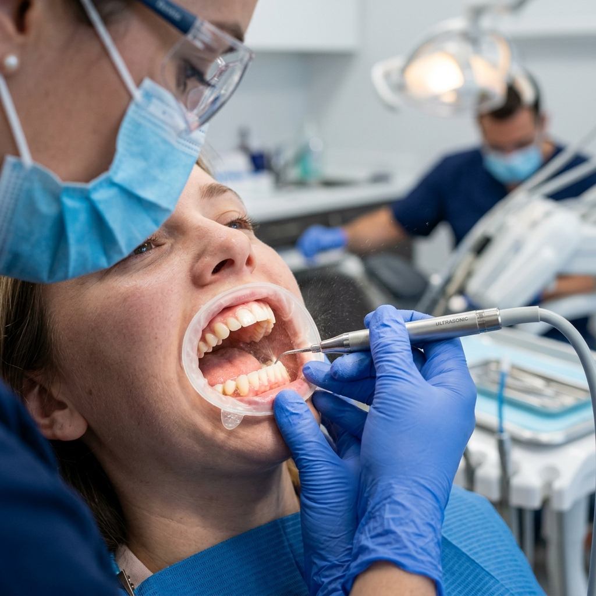

Removes plaque and tartar buildup
Even people who brush regularly can develop tartar in hard-to-reach areas. Professional cleaning helps clear these deposits before they contribute to gum irritation and dental disease.
Dedicated Treatment Page
Professional teeth cleaning at Vidula Dental Clinic in Theni helps remove plaque, tartar, and surface stains that regular brushing may miss. It is one of the most important preventive dental services for maintaining cleaner teeth, healthier gums, fresher breath, and long-term oral health for children, adults, and senior patients.

Why It Matters
Many patients search for teeth cleaning only when they notice deposits or stains, but regular cleaning is also important for gum care, oral hygiene maintenance, and reducing the risk of bigger dental problems later.
Even people who brush regularly can develop tartar in hard-to-reach areas. Professional cleaning helps clear these deposits before they contribute to gum irritation and dental disease.
Bleeding gums, inflammation, and early gum problems may improve when accumulated plaque and tartar are removed and oral hygiene habits are reviewed properly.
Surface discoloration and persistent bad breath can be linked to buildup on the teeth. Cleaning improves freshness and helps teeth look cleaner and brighter.
Teeth cleaning should feel thorough, gentle, and reassuring. Vidula Dental Clinic focuses on patient comfort while also using cleaning visits as an opportunity to guide patients on brushing, gum care, and preventive maintenance that supports long-term dental health.
A professional cleaning visit usually includes checking the teeth and gums, removing plaque and tartar deposits, and polishing the teeth depending on your needs. If there is visible gum irritation, heavy buildup, or sensitivity, the dentist can explain what that means and recommend the right follow-up plan.
FAQ
It helps remove tartar and plaque that regular brushing may not remove, and it supports fresher breath, healthier gums, and preventive dental care.
The right schedule depends on gum health, tartar buildup, and personal oral hygiene habits. A dentist can recommend the most suitable interval after examination.
Yes. Professional cleaning can reduce stain buildup and improve the overall clean appearance of the teeth, especially when deposits are affecting the smile.
Yes. Teeth cleaning is useful across age groups, with treatment adapted to the patient’s comfort, oral condition, and preventive needs.
Related Services
Call Vidula Dental Clinic in Theni to book a professional teeth cleaning visit, or send a WhatsApp message to reserve a convenient appointment time.